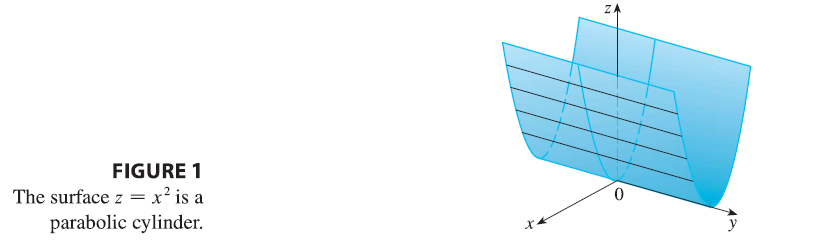
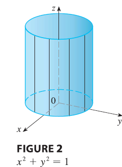

We have already looked at two special types of surfaces: planes (in
Section 12.5) and spheres (in Section 12.1). Here we investigate two
other types of surfaces: cylinders and quadric surfaces.
In order to sketch the graph of a surface, it is useful to determine
the curves of intersection of the surface with planes parallel to the
coordinate planes. These curves are called traces (or
cross-sections) of the surface.
Cylinders
A cylinder is a surface that consists of all lines
(called rulings) that are parallel to a given line and
pass through a given plane curve.
EXAMPLE 1 Sketch the graph of the surface \(z = x^2\).

alt text
SOLUTION Notice that the equation of the graph,
\(z = x^2\), doesn’t involve \(y\). This means that any vertical plane
with equation \(y = k\) (parallel to
the xz-plane) intersects the graph in a curve with equation \(z = x^2\). So these vertical traces are
parabolas. Figure 1 shows how the graph is formed by taking the parabola
\(z = x^2\) in the xz-plane and moving
it in the direction of the y-axis. The graph is a surface, called a
parabolic cylinder, made up of infinitely many shifted
copies of the same parabola. Here the rulings of the cylinder are
parallel to the y-axis.
We noticed that the variable \(y\)
is missing from the equation of the cylinder in Example 1. This is
typical of a surface whose rulings are parallel to one of the coordinate
axes. If one of the variables \(x\),
\(y\), or \(z\) is missing from the equation of a
surface, then the surface is a cylinder.
EXAMPLE 2 Identify and sketch the surfaces. (a)
\(x^2 + y^2 = 1\) (b) \(y^2 + z^2 = 1\)
SOLUTION (a) Since \(z\) is missing and the equations \(x^2 + y^2 = 1\), \(z = k\) represent a circle with radius 1 in
the plane \(z = k\), the surface \(x^2 + y^2 = 1\) is a circular cylinder
whose axis is the z-axis. (See Figure 2.) Here the rulings are vertical
lines.

alt text
In this case \(x\) is missing and
the surface is a circular cylinder whose axis is the x-axis. (See Figure
3.) It is obtained by taking the circle \(y^2
+ z^2 = 1\), \(x = 0\) in the
yz-plane and moving it parallel to the x-axis.
NOTE When you are dealing with surfaces, it is
important to recognize that an equation like \(x^2 + y^2 = 1\) represents a cylinder and
not a circle. The trace of the cylinder \(x^2
+ y^2 = 1\) in the xy-plane is the circle with equations \(x^2 + y^2 = 1\), \(z = 0\).